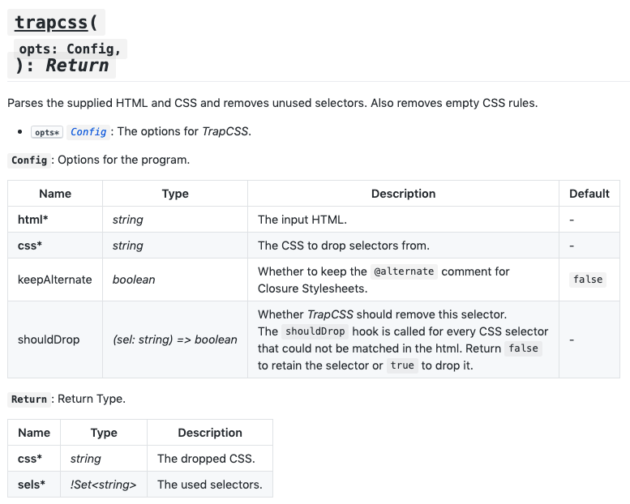

##! Initial Documentation
Before we continue to adding actual logic to allow to preserve _alternate_ comments, let's add some documentation to _TrapCSS_. The docs are kept in the *documentary* folder and are split by files, which are put in order by documentation software. The *index.md* and *footer.md* files in each of the inner dirs always go first and last respectively. The root *index.md* already contains the description which was placed in there by _MNP_. It also has the installation snippet and table of contents. But we can add some more text from the forked package to describe what the software will do, and some additional links.
````markdown
```sh
yarn add trapcss
npm install -D trapcss
```
## Introduction
_TrapCSS_ takes your HTML and CSS as input and returns only
the used CSS as output. Its custom HTML and CSS parsers are
highly optimized for the 99% use case and thus avoid the
overhead of handling malformed markup or stylesheets, ...
📙 [READ WIKI PAGES](../../wiki)
%~%
%TOC%
%~%
````
We'll give a link to wiki which contains some more detailed information, which will be compiled later. We use section breaks like `%~%` which insert visual separators between sections.
The *api/index.md* also contains essential data for generation of the README file:
```markdown
types/api.xml
types/index.xml
%EXAMPLE: example, ../src => trapcss%
%FORK example%
```
_Documentary_ uses components and markers. The typedef component allows to place method headings (when the `method=` attribute is given) and markdown tables with record descriptions.
The typedefs will result in the following generated text:
```markdown
## trapcss(
`opts: Config,`
): Return
Parses the supplied HTML and CSS and removes
unused selectors. Also removes empty CSS rules.
- opts* Config: The options for _TrapCSS_.
__`Config`__: Options for the program.
| Name | Type | Description | Default |
| ------------- | --------------------------------- | -------------------------------------------------------------------------------------------------------------------------------------------------------------------------------------------------------------------- | ------- |
| __html*__ | string | The input HTML. | - |
| __css*__ | string | The CSS to drop selectors from. | - |
| keepAlternate | boolean | Whether to keep the `@alternate` comment for
Closure Stylesheets. | `false` |
| shouldDrop | (sel: string) => boolean | Whether _TrapCSS_ should remove this selector.
The `shouldDrop` hook is called for every CSS selector
that could not be matched in the html. Return `false`
to retain the selector or `true` to drop it. | - |
__`Return`__: Return Type.
| Name | Type | Description |
| --------- | --------------------------- | ------------------- |
| __css*__ | string | The dropped CSS. |
| __sels*__ | !Set<string> | The used selectors. |
```
which looks like on the screenshot below:

The heading is generated from the first ``typedef``, and type tables from the second one. Any types that are referenced on the page will be linked, such as the _Config_ type of *opts* in the function's description. To generate README, we run the command, and the *doc* script consists of: `doc [documentary] ...`
- *-o README.md*: the output file
- *-n _trapcss*: the root namespace
- *-a*: generate annotations into ``typedefs.json``
- *-d*: verbose debug logging
The default location for input is *documentary* but it can be changed. Method headings can also be [customised](methods) using your own `` component put into *.documentary* folder. Once again, the dev process for documentation is fully automated and provides customisation strategies so you can express your own creativity with custom method headings. Custom type tables via JSX components will be supported in future versions also. Submit [an issue](index#getting-help) if you run into difficulties during customisation.
_Documentary_ is not a simple JSDoc to HTML generator. It's an advanced piece of software that allows to compile full, quality documentation from examples, markdown and type information. It's there to make you effective at writing READMEs and automate the process as much as possible, but you're in control of how your docs look like.